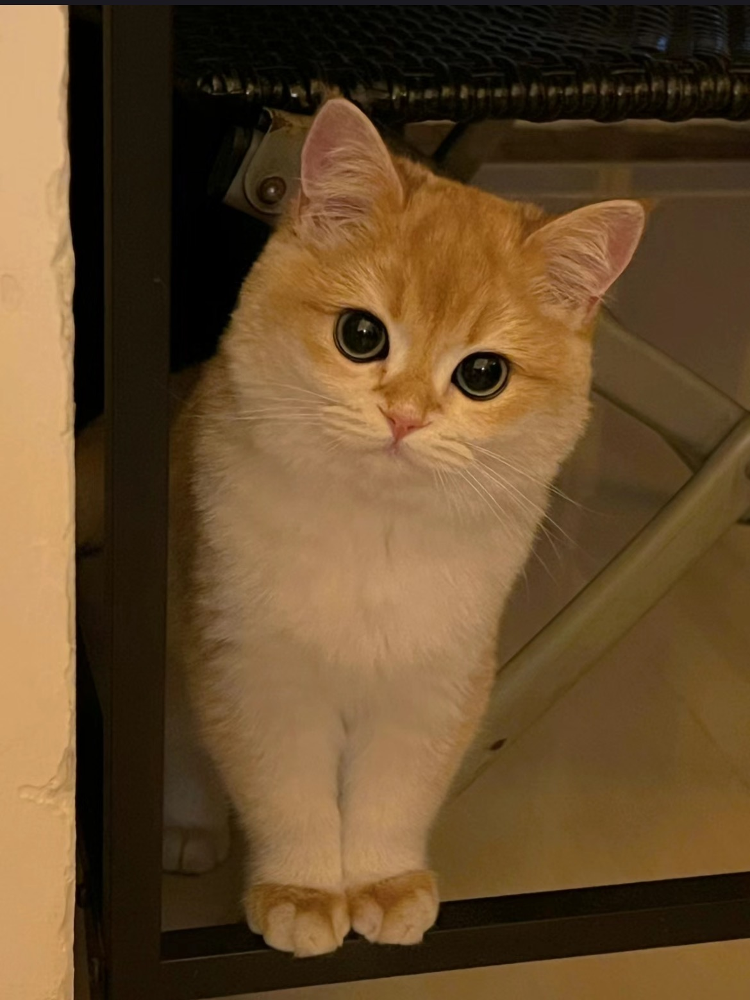

Introduction of Myself
A Picture of My Cat
My personal life information
- Description
It is difficult for me to define myself in several keywords. Actually I don't know what kind of person I am. If I have to clarify myself into a specific group, I'll say that I am the kind of person who is super introverted and preper to stay in a comfort zone, such as my own room. Prepared with socializing with new people I prefer to play with my cat, which I has demonstrated in the picture part. If you wnat you can click the button to go to the top of this page and click the nav button again to see how cute it is.
- Hobbies
As I mentioned, I spend most of my time stay at home so most of my hobbies are also indoor activities, such as playing computer games, reading detective novels or watching cats vedios on Youtube. However I think it is also interesting to stay at school with my friends especially when we are doing our homework together. (I will give more detailed introduction to my college in the following paragraph.
- Daily Routines
- In the morning, I usually get up at 8:30-9:00 am and I will search some global news to read. Then I will wake my cat up and play with my cat for a little while and eat my breakfast. After that I will go to the bus stop which is a 5-min-walk distance from where I live to catch the bus to school
- I usuall have 2-4 lessons on weekdays and most of my classes will end in the afternoon. Then I'll go to the library to do my homework.
- When I return home, I'll first prepare for the meals and then play with my cat till I go to bed.